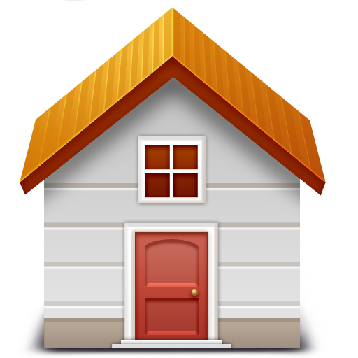

This is the home page of my personal website portfolio, where you can learn all about me, my background, and what I am passionate about. Through this website, I aim to share my journey, my skills, and the services I provide to those interested in connecting with me. It's a glimpse into my world, highlighting my education, hobbies, and professional expertise.
Whether you're curious about my academic background, interested in the things I enjoy doing in my free time, or looking for someone skilled in web development and related services, you'll find all the details here. Feel free to explore the links above to dive deeper into different aspects of my life and work. Your feedback and interaction are always welcome!